Bert Radke
bbv Software Services
Senior Consultant
Growth of Data
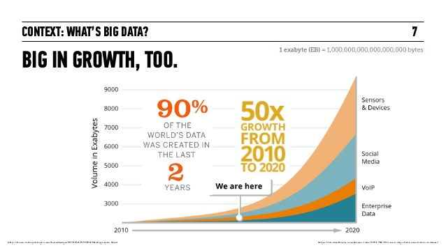
Quelle: promptcloud.com
Panama Papers
Quelle: sueddeutsche.de
Schema
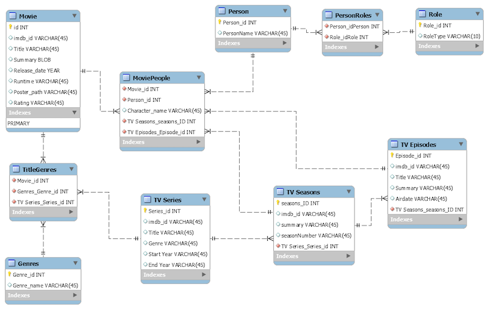
Quelle: stackoverflow.com
Indexes
- single-property
- composite
- full-text
Constrains
- Unique property constraints
- Property existence constraints
- Node Keys
History repeating?
 Network Model; Source: mariadb.com
Network Model; Source: mariadb.com
Cypher
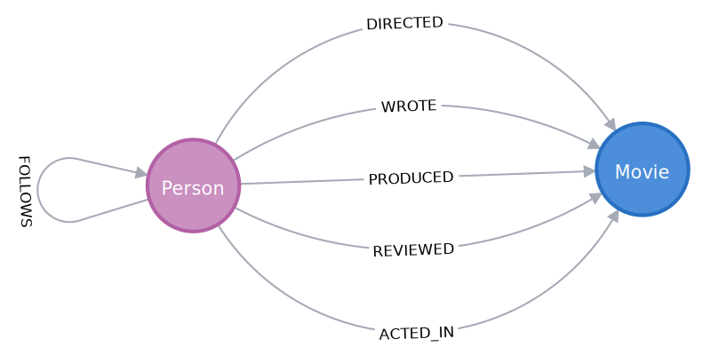
match (p:Person)-[r:DIRECTED]->(m:Movie) return p,r,n
Pattern Matching
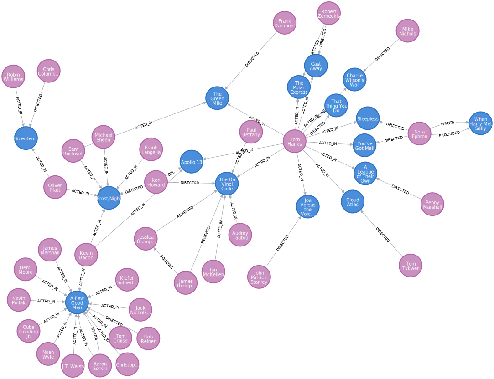
match p=shortestPath((atlas:Movie)-[*1..4]-(good:Movie))
where good.title = 'A Few Good Men'
and atlas.title = 'Cloud Atlas'
return p
shortest path - Result
match p=shortestPath((atlas:Movie)<-[*1..4]->(good:Movie))
where good.title = 'A Few Good Men'
and atlas.title = 'Cloud Atlas'
return p
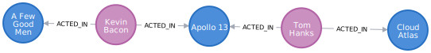
all path - Result
match p=(atlas:Movie)<-[*1..4]->(good:Movie)
where good.title = 'A Few Good Men'
and atlas.title = 'Cloud Atlas'
return p
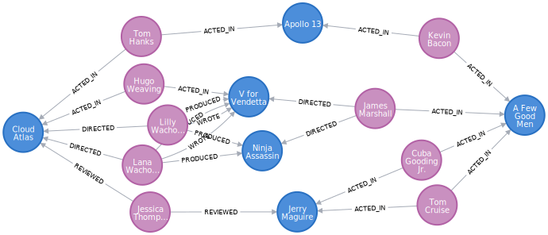
Cypher
- match:
- query for notes and relationships
- create / merge:
- create notes and / or relationships
- delete:
- delete of notes and relationships
- set:
- setting of attributes
- remove:
- removing of attributes
- with:
- chaining of queries
and more
- A
- tomicity
- C
- onsistency
- I
- solation
- D
- urability
DB - Plugins
- reside inside database
- low-level API
- Graph Algorithm
- GraphQL
APOC
Apoc
- 499 Functions and Procedures
- Import / Export
- Text, Phonetic
- Refactorings
- Jobs, Transactions, virtual Nodes ..
CALL apoc.load.csv('/tmp/test.csv') yield lineNo, map,
list RETURN *;
Running Neo4j
 JVM; Source: Oracle
JVM; Source: Oracle
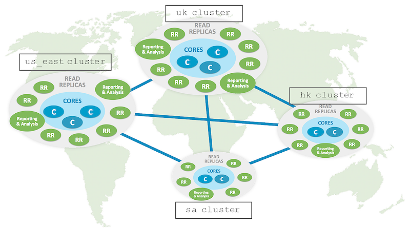
Cluster; Source: Neo4j
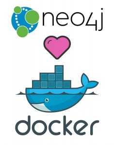
Docker; Source: Neo4j
Kubernetes; Source: Neo4j
Helm; Source: Neo4j
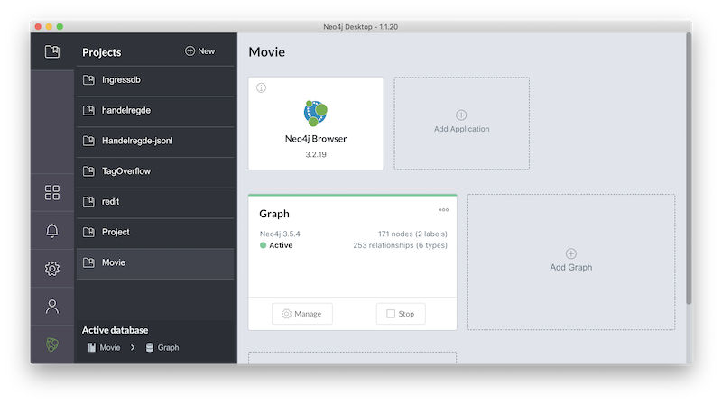
Protocol
Drivers
Official
- Java
- .Net
- Python
- Go
- JavaScript
Community
- Erlang / Elixir
- C/C++
- Ruby
- Clojure
- PHP
- Perl
- R
- Haskell
Community Eddition
Or
Enterprise Edition
(graphs)-[:ARE]->(everywhere) ?
Identity Management
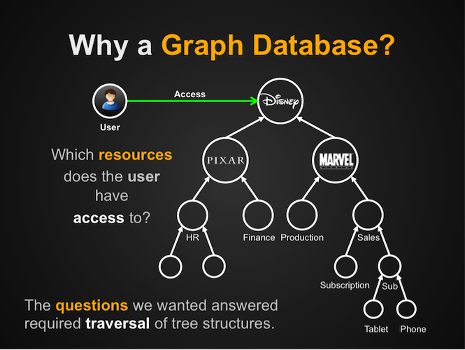
Source: Neo4j.com
Fraud Detection
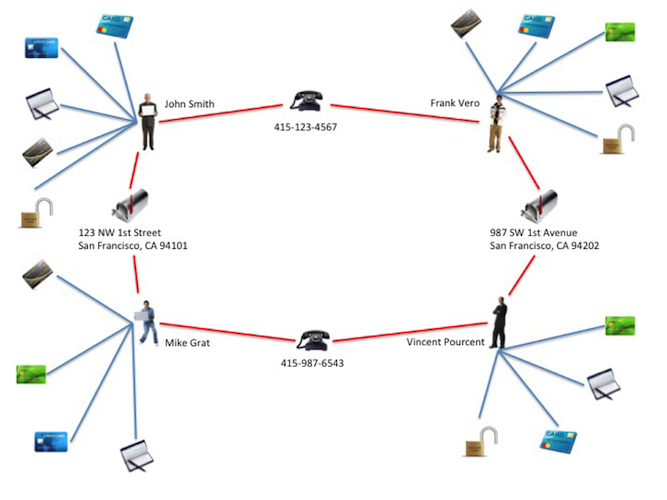
Source: Neo4j.com
Fraud Detection
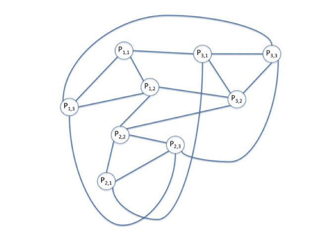
Source: Neo4j.com
jQAssistant
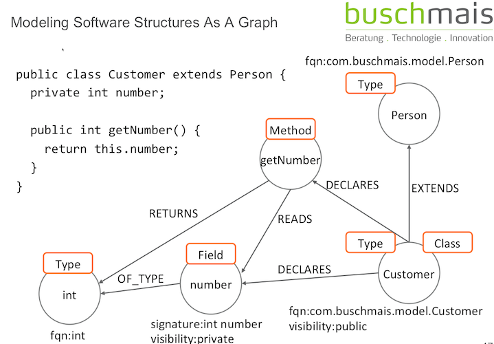
Source: Neo4j.com
Service Monitoring
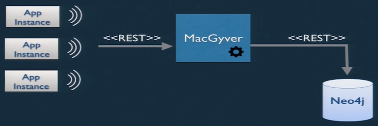
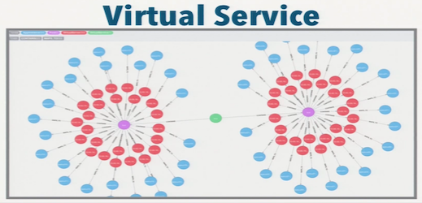
Source: Neo4j.com
Social Graphs
Adobe Behance
Sandbox
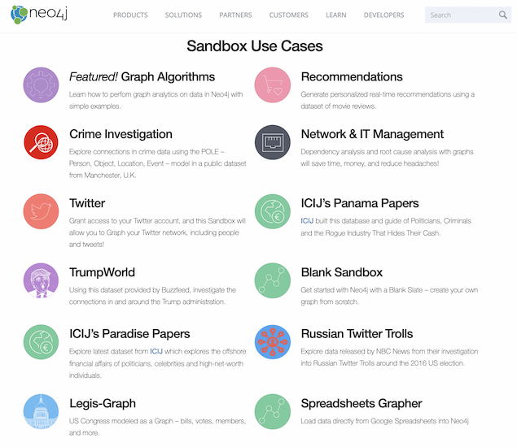
Neo4j Sandboxes
Others
- recommendation
- natural language processing
- medical science
- machine learning
- see Neo4j website
{kind=link}